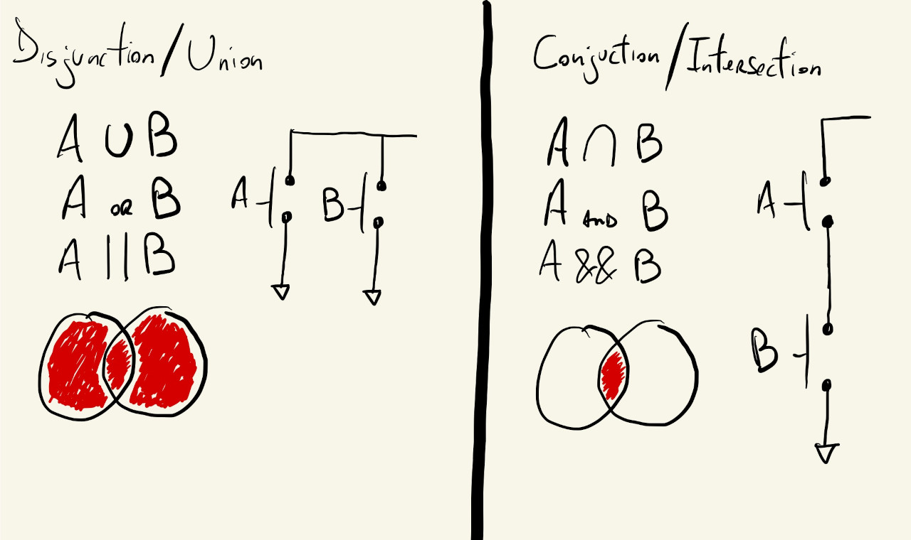
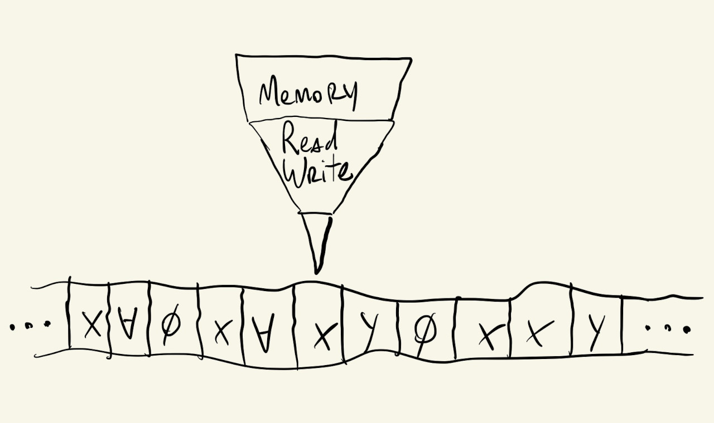

As sophisticated as computers might appear, the underlying principle of how they work is surprisingly straightforward. At their core, computers are systems designed to store and manipulate data. Data refers to raw, unprocessed symbols or values (numbers, signals, characters) that, on their own, carry no inherent meaning. When data is organized and interpreted within a meaningful context, it becomes information.
Take a Video Game for example. The computer stores a collection of raw data: 3D mesh files, texture images, audio samples, executable code. None of it "means" anything in isolation. But when the game engine processes that data in real time (tracking the player’s position, applying physics rules, rendering each frame) it becomes information: the player is moving right, the enemy’s health is dropping, the next level is loading.
How does a computer actually store data? The answer lies in the physics of its electronic components. At the hardware level, computers are built primarily from two fundamental types of components: capacitors and transistors.
A capacitor stores electrical charge between two conductive plates. When charged, it represents an on state; when discharged, an off state. This is the basis of DRAM (Dynamic RAM): the type of short-term working memory used in computers. Because capacitors gradually leak their charge, DRAM must be constantly refreshed, which is why it is called dynamic.
A transistor acts as an electronic switch. When a voltage is applied to its control terminal (the gate), it allows current to flow between its other two terminals (the on state). Without that voltage, current is blocked (the off state). Modern processors contain billions of transistors, and their switching behavior is the basis of all computation and logic.
In \(1937\), Claude Shannon wrote his master’s thesis "A Symbolic Analysis of Relay and Switching Circuits" at MIT. In it, he proved that these on/off electrical states could be described and manipulated using Boolean Algebra, a branch of mathematics that operates exclusively on two values: \(1\) and \(0\). This insight allowed engineers to design arbitrarily complex circuits from simple, repeatable building blocks, and remains the mathematical foundation of all digital computing today.

Different representations of the logic operations implemented by Shannon using electrical switches
The conceptual unit that maps to these two electronic states is called a bit (short for binary digit). A single bit holds exactly one of two values: \(0\) (off, false) or \(1\) (on, true).
Let's say we want to represent numbers. With one bit we can represent only two distinct states. To represent more values, we combine bits. Two bits give us \(2^2 = 4\) combinations (00, 01, 10, 11), which we can map to the numbers 0, 1, 2, and 3. Three bits yield \(2^3 = 8\) combinations. In general, \(n\) bits can represent \(2^n\) distinct values: exponential growth from a tiny building block.
When we group 8 bits together, we get a byte. A byte can represent \(2^8 = 256\) different values (we start at 0 and go all the way through 255). The choice of 8 wasn’t arbitrary: the ASCII character encoding standard (which maps letters, digits and symbols to numbers) requires 7 bits for its 128 characters, so 8 bits offered a clean power-of-2 boundary with room for extensions. IBM’s standardization of the 8-bit byte with the System/360 in \(1964\) cemented its universal adoption. This counting system (where each position represents a successive power of 2) is called the binary numeral system, and it is the native language of digital computers.
Numbers are just one kind of data. What about letters, decimal values, or logical conditions? The solution, consistent with everything above, is to agree on conventions for what particular bit patterns mean. For characters, ASCII assigns a unique number to each symbol. The letter ’A’ maps to the number 65, stored in binary as 01000001. But how does the computer know whether a given byte represents the number 65 or the letter ‘A’? Through context: additional structural information tells the system how to interpret the raw bits. This extra information is nothing more than, you guessed it, more bits! For example, we might add a 0 at the beginning of our data to signal this is a number, or a one to signal this is a letter. In reality this extra contextual information is much more complex, but the concept remains the same: More bits to represent more variations in data.
This is the concept behind data types. Modern programming languages define several primitive (built-in) types that the computer handles natively:
int): whole numbers, positive or negative. E.g., -3, 0, 42float): numbers with decimal components. E.g., 3.14, -0.5char): individual letters or symbols. E.g., ’A’, ’!’string): sequences of characters forming words or text. E.g., "Hello"bool): logical values, either true or false: the most fundamental unit of meaning in computingMany more data types can be built from these primitives (arrays, objects, images, audio buffers) but these five form the foundation. When you declare a variable in a program and assign it a value, you are telling the computer both what to store and how to interpret it.
0 or 1, corresponding to the off/false or on/true state of an electronic componentWe now have a mechanism for storing data. But storage alone is insufficient, we also need a systematic way to process it. This is where Alan Turing’s contribution becomes essential.
English mathematician Alan Turing published his landmark paper "On Computable Numbers, with an Application to the Entscheidungsproblem" in \(1936\). In it, he described an abstract computational device, now called the Turing Machine, that defined, for the first time, what it formally means to "compute" something.
The Turing Machine is a conceptual model, not a physical device. It consists of four components:
0, 1, or blank)
Simplified representation of a Turing Machine with instruction set \(\{\) \(X\), \(Y\), \(\varnothing\), \(\forall\) \(\}\)
What makes this remarkable is that despite its simplicity, Turing proved that any computation that can be described algorithmically can be carried out by such a machine. This is the heart of the Church-Turing thesis: any effectively computable function can be computed by a Turing Machine. A machine with just a handful of primitive operations, read, write, move, change state, can, in principle, compute anything that any computer can compute. Your laptop, phone, and the microcontroller in a coffee machine are all, in this formal sense, Turing-equivalent, and while we would never, for example, render a Pixar movie in a 90s Nokia phone, we actually could!
The Turing Machine gave us a theoretical framework for computation. From it, the concept of a program emerges naturally: a finite, well-defined set of rules, a transition table, that specifies how to transform input data into output. Programming is, at its core, the act of writing those rules.
Some form of programmable computation has existed since at least the \(1830\)s, when Ada Lovelace wrote what is widely considered the first algorithm intended for execution by a machine, a sequence of operations for Charles Babbage’s Analytical Engine to compute Bernoulli numbers. Early mechanical computers were programmed using punched cards: physical pieces of cardboard with holes at specific positions, where the presence or absence of a hole determined which mechanical connections were made.
By the \(1940\)s, electronic computers had arrived, and the programming paradigm evolved accordingly. But the first programs were still written as explicit sequences of on/off signals, directly manipulating electronic switches. This is what we now call machine code: the lowest-level form of instructions a processor can execute.
Writing machine code by hand is tedious and error-prone. The natural response was to develop progressively more expressive ways of giving instructions to computers, what we call programming languages. Each successive generation adds a layer of abstraction over the one below it, hiding complexity and letting programmers focus on what they want to do rather than how the hardware should do it.
The first step up from machine code was assembly language: a human-readable notation where each instruction corresponds directly to a single machine-level operation. Instead of writing raw binary, a programmer might write MOV AX, 1 to load the value 1 into a specific register, or ADD AX, BX to add two values. Assembly is still used in performance-critical contexts today, embedded systems, operating system kernels, device drivers, but it demands that the programmer manage memory addresses, registers, and hardware specifics directly, making it powerful but laborious.
The next abstraction layer brought compiled languages. A programmer writes instructions in a higher-level syntax, closer to human reasoning, and a separate program called a compiler translates the entire source code into machine-executable instructions before the program runs. The work of Grace Hopper, American computer scientist and US Navy Admiral, was foundational here: in the early \(1950\)s, Hopper demonstrated that English-like terms could describe program instructions in a machine-independent way and developed some of the first compilers, which led to languages like FORTRAN, ALGOL and COBOL.
Here is a simple example in C++:
#include <iostream>
void printSomething() {
std::cout << "Hello, World!";
}That single std::cout call compiles down to dozens of low-level assembly instructions: loading characters into registers, making system calls to write to the screen, managing the call stack. The compiler handles all of that invisibly. Common compiled languages include C, C++ and C#, the naming is intentional: C++ builds on C (the ++ is C’s own increment operator, meaning "one step beyond"), and C# takes its name from the musical sharp symbol, implying yet another step up.
The trend continued with interpreted languages, which add another abstraction layer. Instead of compiling the entire program before it runs, an interpreter reads and executes code line by line at runtime, making development faster and more flexible, at some cost to raw execution speed. Here is the equivalent code in Python from the C++ we saw above:
print("Hello, World!")Amazing! Only one instruction, instead of the several lines in C++; internally, a chain of operations that eventually reduces to the same kind of machine-level steps as the C++ version. What was considered "high-level" in the \(1950\)s is very different from today. The trend of abstraction continues: visual programming environments let users construct programs by connecting nodes and blocks rather than writing text; AI-assisted coding lets users describe intent in plain language and have code generated for them (although I personally don't believe it will replace high level languages, just as high level languages haven't replaced low level ones!). There is a lot of discussion of wether these new forms of programming are as useful as the lower layers, but they are definitely a meaningful part of computing’s ongoing evolution.
The language we will use in this course is JavaScript, a high-level, interpreted language originally designed to run inside web browsers. Being interpreted means our code is executed line by line by the browser’s JavaScript engine, with no separate compilation step. This makes it fast to write, test and iterate, particularly well-suited for creative and exploratory work.
JavaScript is also a multi-paradigm language, meaning it supports different styles of programming. And like most general-purpose languages, it is extended through libraries, collections of pre-written code that add functionality without requiring you to build everything from scratch.
The library we will use is p5.js, a JavaScript library built specifically for creative coding, with a focus on accessibility and visual expression. p5.js simplifies drawing shapes, working with color, animating content, and responding to mouse and keyboard input, all directly in a browser window. JavaScript’s flexibility, the very feature that makes it approachable for beginners, can also be a source of subtle bugs, since it enforces fewer rules than many other languages. This tradeoff is worth keeping in mind as you develop your coding instincts.
This has been a condensed and particular narrative of some key moments in computing history. Many other figures, perspectives and stories are equally important. Some starting points: